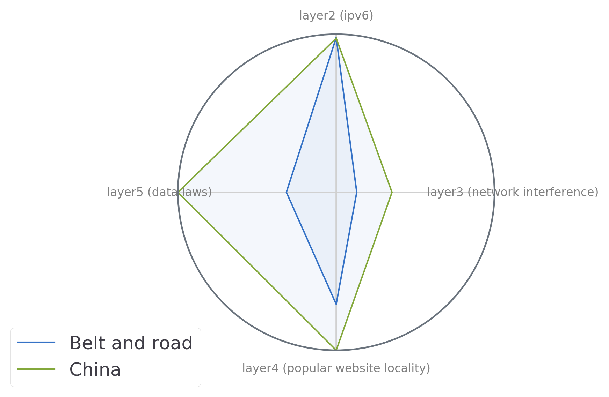
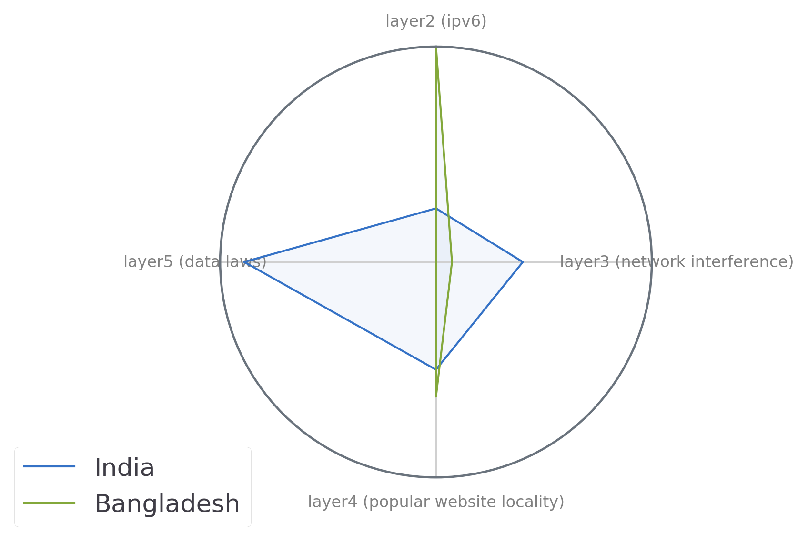
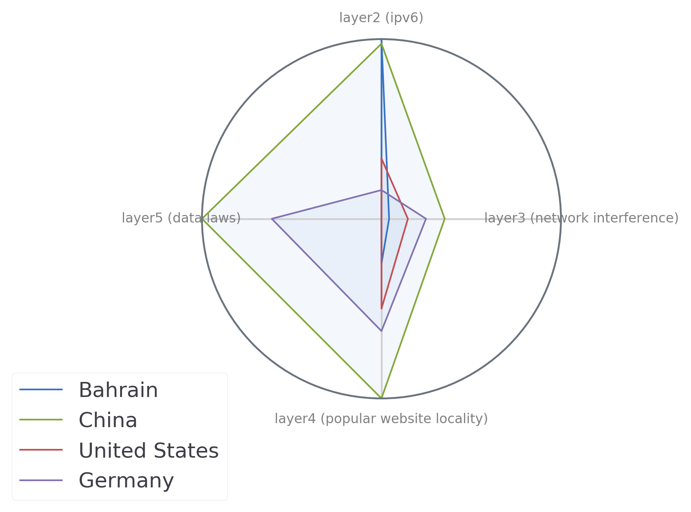

III: What have we learned?
1 Surprising divergences
Countires you would expect to be similar are sometimes quite different. Take China and its Belt & Road partners 1. Per popular imagination, China's model of the Internet has set a precedent, one which other Belt and Road countries follow.

Our data challenges that assumption. In fact, China stands out from other Belt & Road countries. It has more data locality laws, a high degree of website locality (perhaps as a result of censorship2), and significantly higher network interference. In fact, China's only similarity with other Belt & Road countries are its low rates of IPv6 adoption.

Alternatively, consider India and Bangladesh. Despite similar culture, history, and geographic locality, these two regional neighbors have substantially different profiles.
2 Unexpected similarities
Countries you would expect to be different can be surprisingly similar. If you asked me what Norway has in common with Saudi Arabia, Kuwait, UAE, etc, I'd have said "aside from oil, not much."
In reality, these countires have similar amounts of network interference, a similar degree of content-layer locality, and similar IPv6 penetration. The main difference that our profiles captures is simply that these Gulf states tend not to have laws restricting the flow of data.
3 The Internet is not bi-polar

The Internet is multi-polar, with different Internet governance decisions producing diverse types of fragmentation. It's tempting to imagine a bi-polar Internet, with China on one side, and the West on the other. In this model, it would be tempting to place, for example, Bahrain on the China ``side.'' Germany might sit on the ``US side.'' Our metrics reveal a much more complex picture. In fact, all four countries mentioned here have different profiles to one another.
4 So what?
Our profiles allow us to view 'internet fragmentation' in a more nuanced way. Through this view, policymakers and advocates can describe how specifically the internet differs across national borders.
These specific metrics could help policymakers, advocacy organizations and academics work toward specific, data-driven goals. In doing so, they stand a chance at de-fragmenting the Internet in a targeted way.
Our data could provide industry stakeholders with a roadmap for moving from one market to another. For example, if a technology company is thinking of moving from the United States to Southeast Asia, they could use our data to select those countries with which the United States has a similar Internet.
4.1 Future work: Clusters of interoperability
While our current work compares countries on a global scale, future work could create point-to-point comparisons of countries, producing clusters of Internets that are interoperable with one another.
For example, on our content layer, we currently look at how similar popular websites are to a global average.
- But how similar is Argentina's list of most popular websites compared to Chile's?
- How similar are the types of network interference in Argentina vs Chile?
- Both countries may have data laws, but do they have the same or similar data laws?
With this tool, policymakers could create more targeted interventions to, for example "join the five-eyes Internet" or "move away from the Belt & Road internet."
Those in industry could use these clusters as a key strategic planning tool, allowing them to move products across Internets that, despite superficial differences, are actually quite interoperable.